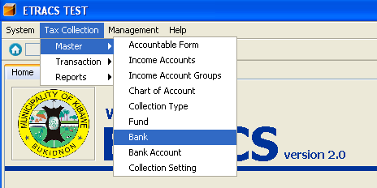
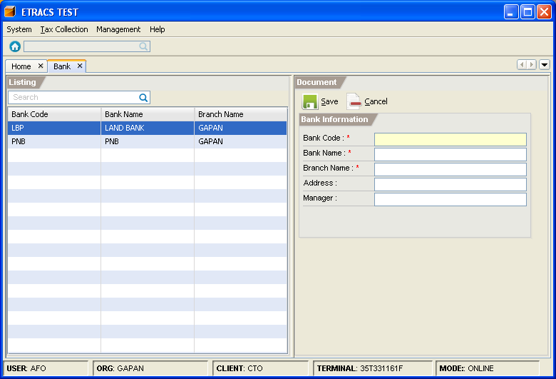
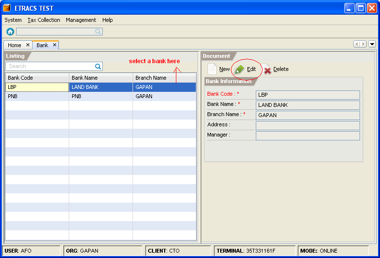
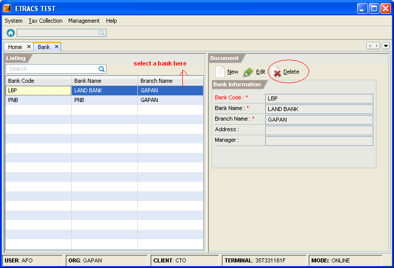

Managing Banks
This facility enables you to add, edit, and delete a bank.
How to add a bank?
1. On the menu toolbar, go to "Tax Collection -> Master -> Bank" item.

2. Click on the "New" button.
3. Fill in the bank information.

4. Click on the "Save" button.
How to edit a bank information?
1. Go to "Bank" page. (Please refer to Adding a Bank - Step 1)
2. Select the bank item from the list, and click on the "Edit" button.

3. Modify the bank information.
4. Click on the "Save" button.
How to delete a bank?
1. Go to "Bank" page. (Please refer to Adding a Bank - Step 1)
2. Select the bank item from the list, and click on the "Delete" button.
